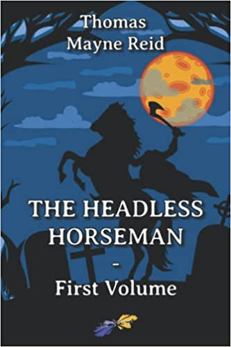
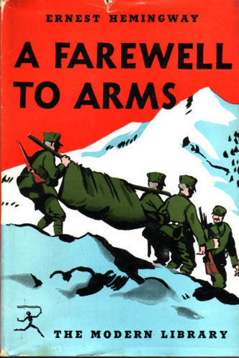

I didn't like to read books when I was very young, but in the high school I felt in love with it.
I think I was just bored and picked a random book and actually liked it.
I think it was novels compilation of Thomas Mayne Reid and I liked the American West esthetics.

After the high school I started to learn Russian literature in University of Latvia.
My most favorite author is Ernest Hemingway. And "A Farewell to Arms" is my most favorite Hemingway's novel.

At the moment, I'm reading Stephen King's the first novel of "The Dark Tower" series, "The Gunslinger".